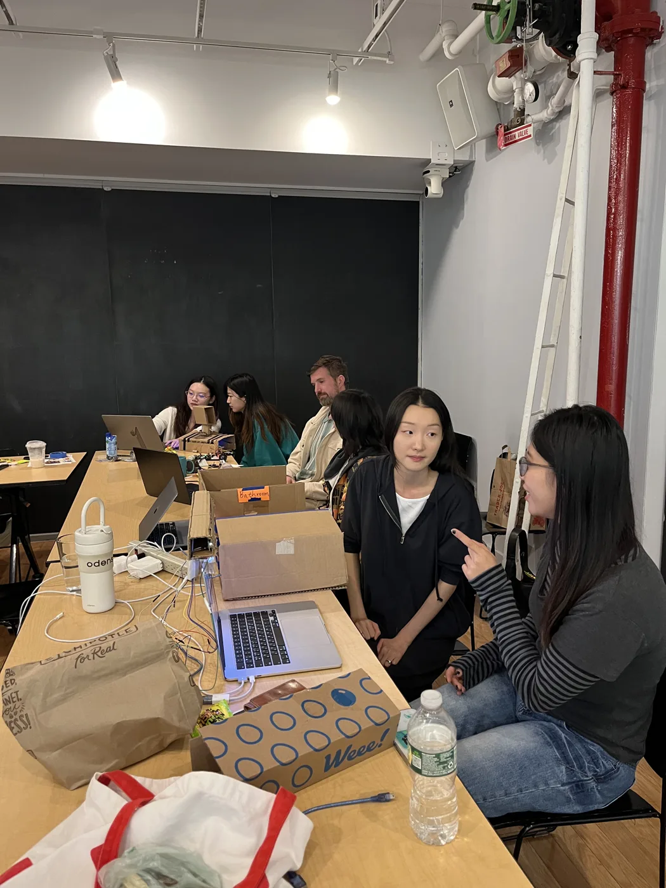
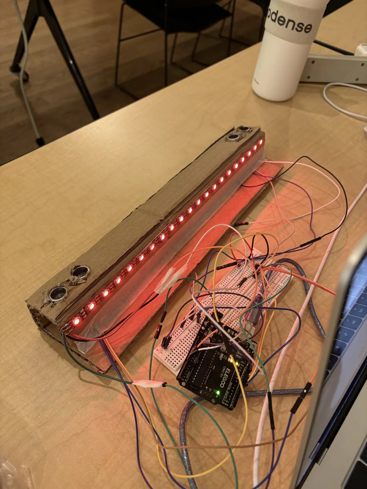

I tested a cardboard version with classmates, then turned their feedback into the final one.




Next, a more personal app, and a real light bar.
The app
Cues paused while you are on a call
This week
You drift most on Thursday afternoons
- Quiet during meetingsCheck your calendar and pause cues while you are on a call.
- A weekly look backA short summary of when you drift most, so the habit shows.
- A menu bar appOpen Poise from the top of your screen, no website needed.
The light bar

- Light that fits the roomBrighter on sunny days, softer at night, never too bright.
- Blinks, not just colorsThe light blinks too, so people who are color blind can tell when they drift.
- A 3D printed light barLooks like a real product, with a battery so there is no cable.